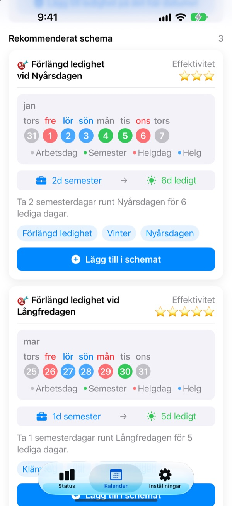
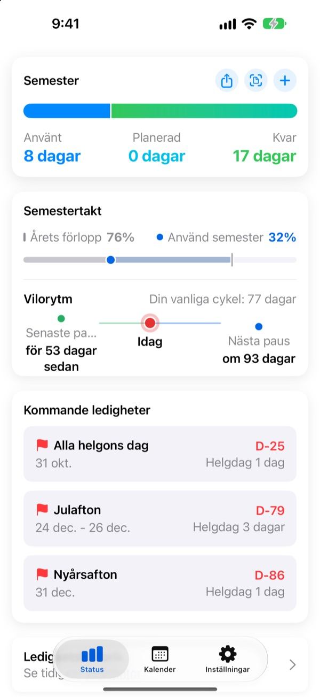
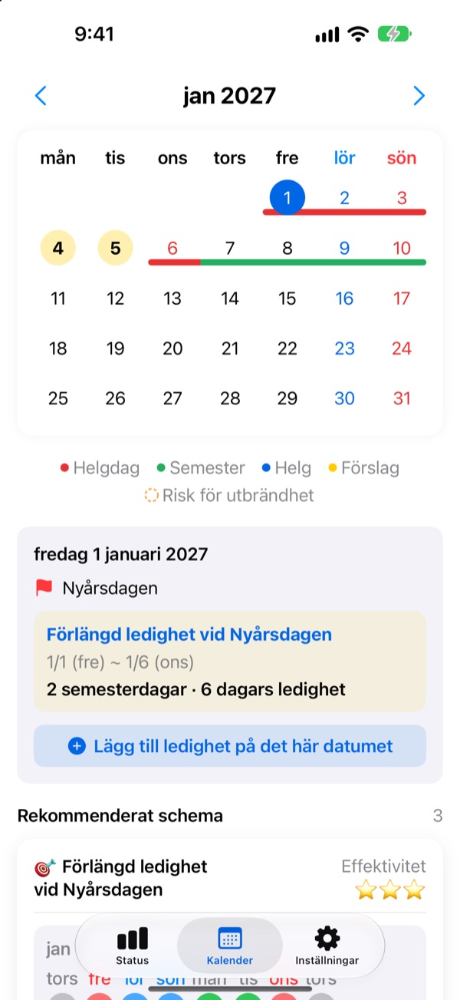
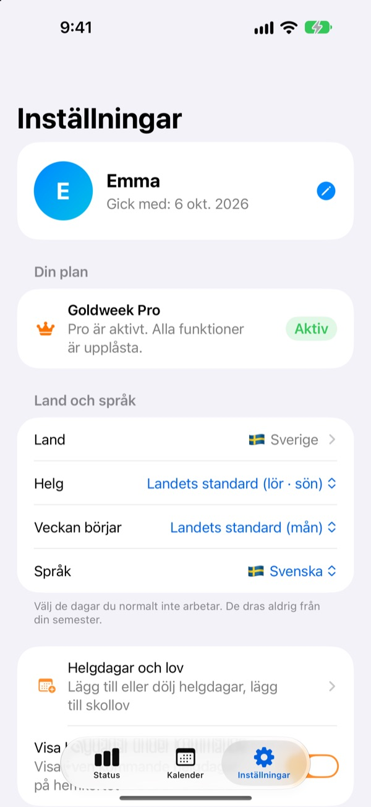

Få semesterdagar,
lång ledighet
Goldweek kopplar ihop helgdagar med helger och visar exakt vilka dagar du ska ta ledigt för att vara ledig så länge som möjligt. Inget mer bläddrande och räknande i kalendern.
Gratis att hämta. Att följa semestern och se förslag är fortsatt gratis.

Hur långt räcker din semester?
Välj hur många dagar du kan ta ledigt. Du ser de längsta ledigheterna de ger runt de kommande helgdagarna.
Trött på att räkna dagar i kalendern?
Torsdag är röd dag, ska du ta fredagen? Eller spara dagen till långhelgen nästa månad? Efter tillräckligt mycket bläddrande tar du ledigt vilken dag som helst, och i december försvinner de dagar som blev över. Goldweek räknar åt dig och visar de dagar som får semestern att räcka längst.
Din semester i en blick
Totalt, uttaget och kvar på en skärm. Bredvid ser du hur långt året har gått och hur mycket semester du har använt, så du direkt ser om du sparar för mycket.
Dina kvarvarande dagar och kommande ledigheter syns i en widget på hemskärmen.

Lägg in ledighet direkt i kalendern
Helgdagar, semester och föreslagna klämdagar syns i färg i kalendern. Tryck på ett datum för att lägga till eller ändra ledighet, även halvdagar, kvartsdagar eller timmar.
Tidigare ledigheter tar du in på en gång från ett foto av HR-systemets skärm.

Ditt land, dina arbetstider
Helgdagar i 42 länder, från Sverige och Norden till Europa, Asien och Amerika. Där helgdagar skiljer sig mellan regioner väljer du din. Saknas ditt land? Lägg till egna helgdagar.
Du väljer också helgdagarna i veckan, veckans första dag och om du jobbar fast schema, deltid eller skift.

Kom igång i tre steg
- 1
Berätta var du jobbar
Första gången väljer du land och hur många semesterdagar du har per år.
- 2
Välj ett förslag
På fliken Kalender finns föreslagna ledigheter. Lägg till dem du gillar.
- 3
För in din ledighet
Tryck på ett datum eller ta in tidigare ledighet från ett foto.
Så räknas det
- Heldag
- 1 dag från saldot
- Halvdag
- 0,5 dag
- Kvartsdag
- 0,25 dag
- Timmar
- Efter dina arbetstimmar den dagen
- Sjukdom, tjänstledighet, tjänsteresa
- Dras inte från semestern
- Bonusledighet
- Extra lediga dagar som kompledighet, förs separat med sista giltighetsdag (Pro)
Antal semesterdagar per år och månaden då semesteråret börjar kan du ändra när som helst i Inställningar.
Bra vila är gratis. Planeringen sköter Plus och Pro.
Gratis
- Heldagar, halvdagar, kvartsdagar och timmar, med kvarvarande semester
- Helgdagar i 42 länder, egna helgdagar och lov
- Se alla förslag för i år, lägg till upp till 3
- Tips om vilointervall, påminnelser och widget
- Lägg till ledighet från ett foto
- iCloud-säkerhetskopia och delat schema med familjen
Plus och Pro
- Plus: Optimal semesterplanerare
- Plus: Obegränsat med förslag, även för förra och nästa år
- Plus: Skicka ledighet till Kalender-appen
- Pro: Allt i Plus, bonusledighet, årsgränser och sparade dagar per typ
- Pro: Importera skolkalender och automatisk kalenderidentifiering
- Pro: Ledigt tillsammans och familjens högtidsdagar
Varje nivå finns som årsprenumeration eller engångsköp för alltid.
Årsprenumerationer förnyas automatiskt om de inte stängs av senast 24 timmar innan perioden tar slut. Hantera dem när som helst under Inställningar > Apple-konto > Prenumerationer.
Vanliga frågor
Mitt semestersaldo stämmer inte.
Kontrollera i Inställningar vilken månad ditt semesterår börjar och hur många semesterdagar du har totalt. Halvdagar (0,5) och kvartsdagar (0,25) dras automatiskt, och typer som inte räknas, som sjukdom, tjänstledighet eller tjänsteresor, påverkar inte saldot. Stämmer det ändå inte, mejla oss.
Min ledighet syns inte i kalendern.
Avbokad ledighet visas inte i kalendern. Kontrollera postens status i Ledighetshantering. Att uppdatera till senaste versionen kan också hjälpa.
Hur lägger jag till bonusledighet?
Tryck på + på fliken Status för att öppna Ledighetshantering och använd avsnittet Bonusledighet längst ned. Välj typ (komp, belöningsledighet, återhämtningsledighet …), ange antal dagar och om du vill en sista giltighetsdag. Bonusledighet förs separat från vanlig semester.
Jag har betalat men inget har låsts upp.
Tryck på Återställ köp längst ned på fliken Inställningar. Köpet återställs med det Apple-konto du är inloggad med i App Store. Hjälper det inte, mejla oss.
Försvinner mina data om jag raderar appen?
Dina data sparas på enheten, så raderar du appen försvinner de. Slå på iCloud-säkerhetskopia så har du en kopia att återställa senare.
Kan jag lägga till egna helgdagar eller dölja några?
Ja. Under Helgdagar och lov i Inställningar lägger du till egna helgdagar eller döljer standardhelgdagar.
Vilka länder stöds?
Goldweek har helgdagarna för 42 länder. Välj land i Inställningar (och region där helgdagarna skiljer sig) så uppdateras kalendern direkt. Saknas ditt land kan du lägga in helgdagarna själv eller önska det via feedback i appen.
Var sparas mina data?
Det du skriver in stannar på din enhet eller i din egen iCloud. Vi får bara anonym användningsstatistik, anonyma kraschrapporter och feedback som du själv väljer att skicka.
För allt som inte besvaras ovan, idéer eller buggar, mejla leeo@kakao.com. Vi svarar oftast inom en eller två arbetsdagar.